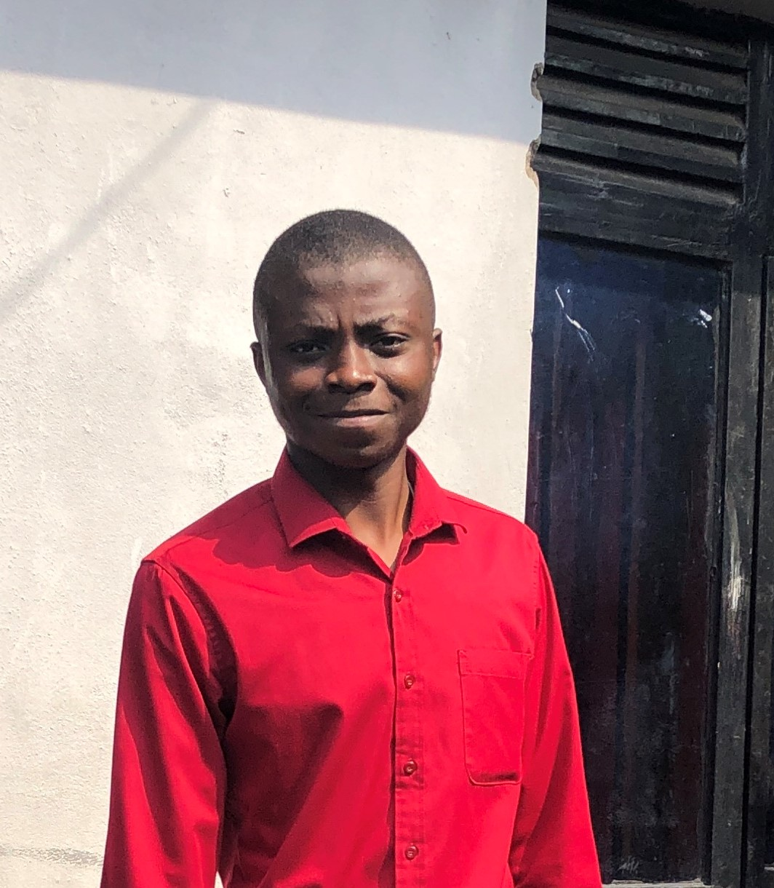
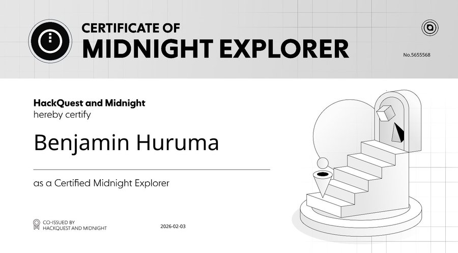
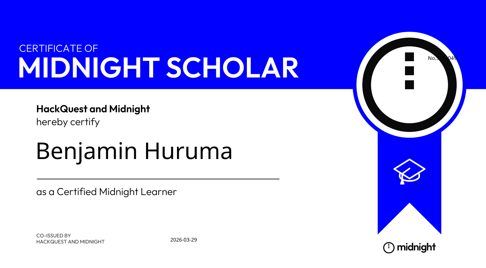

Benjamin Huruma
Accueil

À propos.
Je suis Huruma Musagara Benjamin, jeune Développeur logiciel junior passioné par la programmation et révant d'un monde meilleur grâce à l'Informatique et nouvelles technologies en unissant nos éfforts !
Oui, grâce aux multiples avantages de l'informatique et des nouvelles technologies dans divers domaines et surtout à leur utilisation etiquement responsable, nous pouvons considérablement améliorer nos conditions de vie.
Je m'interesse particulièrement au développement web, aux sysytèmes distribués ou blockchains, la cybersécurité et à l'informatique tout court, avec une volonté claire de comprendre, utiliser et transformer. J'aborde chaque projet comme une opportunité d'apprentissage concret, en prviligiant des solutions durables, fonctionnelles. Mon objectif est de développer des applications fiables, cohérentes et utilses à la comunauté,...
Formation
Ma formation: De septembre 2011 jusqu'en Juillet 2024; j'ai fais mon cursus primaire - sécondaire à l'école primaire et secondaire Sebyera; et j'ai obtenu un Diplome d'Etat en secrétariat-Administration.
Et de Octobre 2025 jusqu'à maitenant; je suis entrain de faire mon cursus universitaire à l'ISIG Goma; dans le Departement Informatique et orientation Génie logiciel
J'avance lentement mais surement !!
Pour des informations plus complètes et précisent sur ma personne voici mon curriculum vitae, téléchargé-le simplement via ce bouton ci-dessous
Télécharger mon CV
Photos
Benjamin huruma
Benjamin Huruma en 2024
Jeune Développeur junior.
Compétences
Engagé dans une progression constante, je travail à transformer mes connaissances en compétences solides, avec l'ambition de devenir un dévelopeur compétent, autonome et capable de répondre efficacement à des problématiques réelles.
- Compétences de Base
- Maitrise des outils Bureautique: Word, Excel, PowerPoint,...
- Parfaite capacité de s'exprimer en Français, Swahili et en Anglais
- Maitrise de l'outil Informatique
- Maitrise de PhotoShop à 80%
- Compétences En cours
- Compétences en Programmation Desktop (Python, C#)
- Compétences en Porgrammation Web (HTML, CSS et JavaScript)
Mes réalisations
Au fil des ans:
Depuis 2021 jusqu'à maitenant: Opérateur de saisie, Formateur et Imprimeur chez LES OPTIQUES WORLD
Je me suis aussi orienté vers le monde de la blockcahin:
En 2025: J'ai participer deux fois dans le programme de Réviseur communautaire de Catalyst dans l'écosystème Cardano voir Cardano
Depuis 2025 jusqu'à maitenant: je suis membre actif dans l'écosystème Midnight: une blockchain de quatrième géneration, voir Midnight Network
Depuis 2025 jusqu'à maitenant: Je suis membre actif dans l'écosystème Safrochain, voir Safrochain
Voici en images quelques certificats de la Blockchain Midnight :


Contactez-moi
Souhaitez-vous m'écrire ? Sentez-vous libre de compléter ce petit formulaire, J'aime rencontrer des nouvelles personnes !